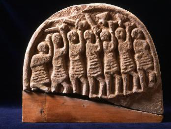

Proposition: The Viking raids harmed England more than they helped it
Remember:
you will be called upon to answer at
least one of the questions as part of the debate; you may (should) also
take
part in other parts if you have things to say that differ from what
your
teammates have said.
Debate:
Team 1:
argue for the Proposition
Team 2:
argue against the Proposition
Assigned
questions - Team 1:
1. Background
- Describe the peoples of Scandinavia before 787, including
their contacts with places outside Scandinavia.
2. Background
- How did a Viking raid work?
3. Background
- Describe Scandianvian trading and settlement throughout
4. Presentation
of the proposition: what is the topic? what is the basis of your argument?
5. Arguments
- select one significant
sentence from the primary sources that that favors your side, and
explain what
it means
6. Arguments
- select one significant
sentence from the primary sources that that favors your side, and
explain what
it means
7. Arguments
- select one significant
sentence from the primary sources that that favors your side, and
explain what
it means
8. Do
the summary, summarizing your team's
arguments and state why they are preferable (you can't do this ahead of
time).
Assigned
questions - Team 2:
1. Background
- Give two or three theories about why the Scandinavians began taking part in Viking
raids.
2. Background - Describe the Viking raids in Anglo-Saxon England, 787-870 (Prof. Deliyannis will bring in maps).
3. Background
- Describe
the reign and achievements of King Alfred of England.
4. Presentation
of the proposition: what is the topic? what is the basis of your argument?
5. Arguments
- select one significant
sentence from the primary sources that that favors your side, and
explain what
it means
6. Arguments
- select one significant
sentence from the primary sources that that favors your side, and
explain what
it means
7. Arguments
- select one significant
sentence from the primary sources that that favors your side, and
explain what
it means
8. Do
the summary, summarizing your team's
arguments and state why they are preferable (you can't do this ahead of
time).
Sources
and further information
I have put an article by Simon Keynes, "The Vikings in England" (in The Oxford Illustrated History of the Vikings, ed. Peter H. Sawyer [Oxford, 1997], pp. 48-82) on Oncourse in the Resources folder, as KeynesVikings1997.pdf.
There is information about the Vikings all over the internet. The Wikipedia articles on Vikings (http://en.wikipedia.org/wiki/Vikings) and the Viking Age (http://en.wikipedia.org/wiki/Viking_Age) are not bad.
The primary source for
Alfred is his biography by Asser, which I have scanned as a PDF file
and placed
on Oncourse in the Resources folder as asser.pdf.
The Anglo-Saxon Chronicle is a history of England that was commissioned by King Alfred; read the entries for the late eighth and ninth centuries at:
http://avalon.law.yale.edu/subject_menus/angsax.asp